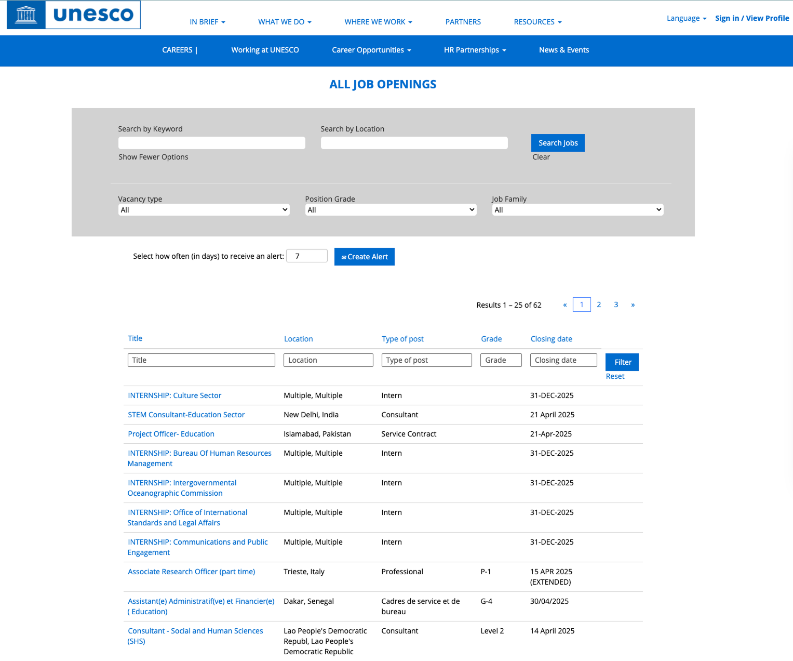

Overview
UNESCO works globally to protect cultural heritage, advance education, and support sustainability. Despite its impact, people eager to volunteer or partner often couldn’t find how to get involved. I led UX research and a redesign to turn the career and volunteer portal into an intuitive, accessible hub.
A Barrier to Global Engagement
I surveyed 10 potential users and ran a heuristic audit. The data showed a clear gap between motivation and usability:

- 80% wanted "clear and organized content" — site felt confusing and text-heavy.
- 70% sought volunteering info, but Career & Volunteer were buried in navigation.
- Heuristic audit: unclear hierarchy, repetitive filters, search delays with no visual feedback.
80% wanted clearer, organized content.
70% sought volunteering; sections hidden behind multiple steps.
Unclear hierarchy, repetitive filters, loading delays with zero feedback.
From Research to Solution
1. Empathizing with the User (Personas)
I turned survey data into three personas representing core UNESCO audiences:
2. Interface Audit & Usability Testing
I built a Usability Test Dashboard and tested three tasks: finding NGO partnerships, skill-based volunteering, and student programs. The friction points became the blueprint for the redesign.
The Solution
Elevated Search & Navigation — Career search moved from buried sub-menus to the top of the homepage for one-click access.

The redesigned Home Page features a direct, accessible search bar and clear calls-to-action.
Multiple Viewing Modes & Structured Details — Map, List, and Gallery views for different mental models; inner job pages use a scannable, card-based format for responsibilities, skills, and duration.
.png)

Left: Interactive Map View for localized opportunities. Right: Structured, scannable inner pages for role clarity.
What I Learned
- Data Validates Design: 80% asked for "clear and organized content" — information architecture must match the user’s mental model.
- Flexibility is Inclusivity: Map, List, and Gallery options showed that accommodating different cognitive styles improves usability for global, diverse audiences.
- Simplicity Drives Engagement: Putting career search front-and-center shortened the path from curious visitor to active applicant.
Outcomes & Impact
Eliminated navigation blockers, clarified role descriptions, and added interactive filters (e.g. Map View) to reduce cognitive load.
Transformed a fragmented, text-heavy portal into a streamlined, user-centric engagement hub.
Anyone, anywhere—student in Taiwan or advocate in India—who wants to contribute has a clear, accessible stage. Easier volunteering means more global engagement.